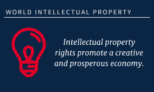

In most western countries, IPR has been heavily enforced by innovators and creators of any kind. The
ability to keep an idea or product safe for monopoly use(for a small amount of time) is very pleasing to
the owners. Over in the other countries around the world, IPR is rather weak and imitation has been a
problem for decades. Taking China for example, China first started opening their doors to foreign investors
such as microsoft and and intel in the early 2000’s. One idea to create stronger IPR in other countries was
to demonstrate different processes of R&D (Research and development), this was done with intel. The doors
for foreign collaboration were opened due to effective communication that was finally established.
Investigators conducting R&D were trying to see if the new business customs would make a dent in the weak
IPR status, instead they found that the chinese had found ways to discourage imitation. Researchers from
China were asked how they worked with weak IPR and they responded “We don’t count on the legal system for
protection; we count on the technologies to protect themselves,”(Minyuan Zhao). There were two ways that
the businesses and innovators could avoid imitation, when referring to foreign businesses in China. The
first would be that the research in the firms are just that, research that has no value without context and
the product would be made at headquarters . The second was various forms of tech that was being developed
would be integrated into other products and that alone it held no value. These protective decisions are
easily done through foreign help, however local business within China still have to take other pathways
because the legal system does not protect them. As one of the researchers stated before, they expect the
technologies to protect themselves. They are trying to fix their own problems instead of making big changes
through the legal system, the progression of IPR to this day is still rather slow due to how their view on
the imitation problems.
